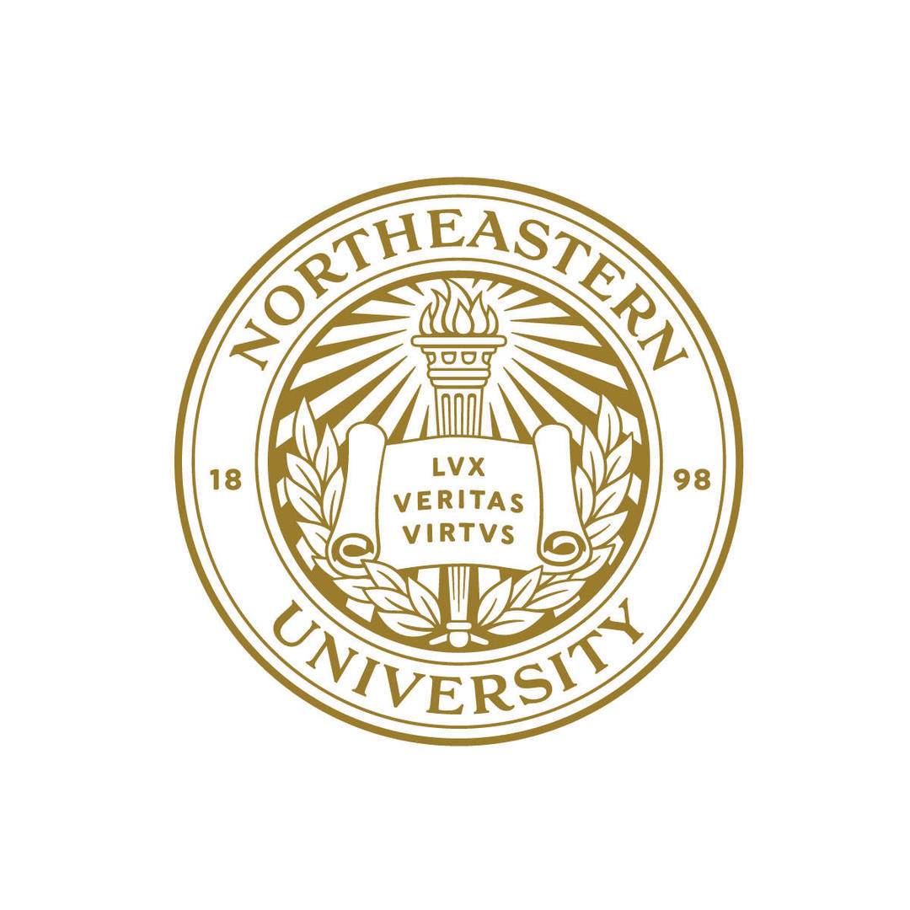
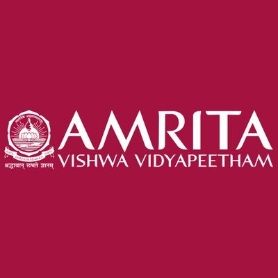

AI/ML Software Engineer & Researcher
Final-semester M.S. Artificial Intelligence student at Northeastern University with production experience building LLM optimization, evaluation, and deployment workflows for healthcare applications.
I'm completing my final semester of the M.S. in Artificial Intelligence at Northeastern University, graduating in December 2026 with a 3.95 GPA. I previously earned my B.Tech. in Computer Science and Engineering (Artificial Intelligence) from Amrita Vishwa Vidyapeetham.
Most recently, I worked as a Software Development Intern in Applied AI at DeliverHealth, contributing to production healthcare AI across LLM fine-tuning, SFT/DPO data workflows, prompt optimization, evaluation, inference reliability, agentic applications, and user-facing web and mobile experiences.
I enjoy working at the intersection of software engineering and applied AI—turning research ideas into reliable products. My broader work spans NLP, LLMs, computer vision, multimodal learning, accessibility, and four peer-reviewed publications across ACL, IEEE, and Springer venues.

M.S. in Artificial Intelligence • Expected December 2026

B.Tech in CSE (AI) • First Class with Distinction
Built a Git-inspired platform for versioning, reviewing, evaluating, and deploying AI agents. The system supports agent registration, pull-request workflows, CI-style evaluation gates, run tracking, and LLM-powered behavioral diffs to make changes in agent behavior easier to review before release.
Contributed to an NLP chatbot that predicts user emotion, conversational tone, and English proficiency using fine-tuned transformer models. My work supported the unified response pipeline and interactive Streamlit experience; this was a collaborative open-source project rather than a repository built solely by me.
Extended a Whisper-based audio captioning system with a learned confidence head, confidence-guided beam search, and temperature scaling. Reframed caption correctness using CLAP and FENSE semantic similarity, reducing expected calibration error by 85% while improving caption quality on Clotho v2.
Compared linear models, decision trees, random forests, SVM, and SVR across three large classification and regression datasets. Evaluated accuracy, AUC/R², statistical significance, feature ablation, noise robustness, training-size sensitivity, and computational trade-offs to identify when additional model complexity is justified.
A simulated robotic system for detecting, picking, and sorting objects by color using computer vision, motion control, and a Gazebo-based robotics environment.
An experimental comparison of image-dehazing methods for satellite imagery, examining atmospheric-haze removal and preprocessing quality for remote-sensing applications.
A touchless computer-control prototype using hand-gesture recognition and socket communication to connect a vision-based input device with a target computer.
Contributed to a collaborative exploration of reconstructing musical compositions with evolutionary optimization and LLM-assisted musical context operating on structured MIDI components.
Contributed to an open-source initiative exploring how to measure and communicate the resource footprint associated with prompts and language-model interactions. My work formed part of the broader project rather than representing sole ownership of the repository.
Contributed to and worked with selected Swift and UIKit libraries during my internship, including Kumo, Gooey, Alerts, and Bedrock. My involvement focused on understanding existing codebases, debugging integration issues, and supporting mobile and accessibility-related development; I was a contributor, not the original author of these libraries.
Published research presenting a novel semi-supervised deep learning framework for automated flood extent mapping using satellite imagery. Developed a ResNet-18 based architecture for handling turbid water conditions and atmospheric interference. The framework leverages limited labeled data through transfer learning techniques and implements data augmentation strategies and pseudo-labeling techniques for learning from unlabeled satellite imagery. The system processes Sentinel-2A multispectral data and contributes to disaster response capabilities and environmental monitoring systems.
Research in affective computing presenting EmoBot, an emotionally intelligent conversational AI system that dynamically adapts its communication style based on real-time user emotion detection. Developed NLP models using transformer architectures for emotion recognition from text. The system implements context-aware response generation that modifies explanation complexity, tone, and content delivery strategies based on detected emotional states. Integrates sentiment analysis pipelines with personalized user profiling to enhance conversational memory and emotional intelligence.
Research study published in ACL focusing on automatic categorization of Telugu news articles using machine learning techniques. Conducted comparative analysis of multiple algorithms including traditional approaches (TF-IDF, N-grams) and modern embedding methods (Word2Vec, FastText, BERT-based models). Developed a preprocessing pipeline specifically designed for Telugu text, handling morphological variations and linguistic nuances. The study found that Word2Vec skip-gram model combined with polynomial Support Vector Machines performed well for Telugu news classification, contributing to low-resource language processing research.
Published IEEE research presenting an Internet of Things (IoT) solution for home automation and environmental monitoring using Wireless Sensor Networks. Designed and implemented a Zigbee-based architecture supporting multiple sensor nodes for temperature, humidity, motion detection, air quality monitoring, and security applications. Developed energy-efficient communication protocols and created a cloud storage pipeline with real-time data analytics, alert generation, and mobile application integration for remote monitoring. The system demonstrates mesh networking capabilities and fault tolerance mechanisms for smart home applications.
I'm open to full-time Software Engineering, Machine Learning Engineering, Applied AI, and LLM opportunities beginning around my December 2026 graduation. The fastest way to reach me is by email or LinkedIn.